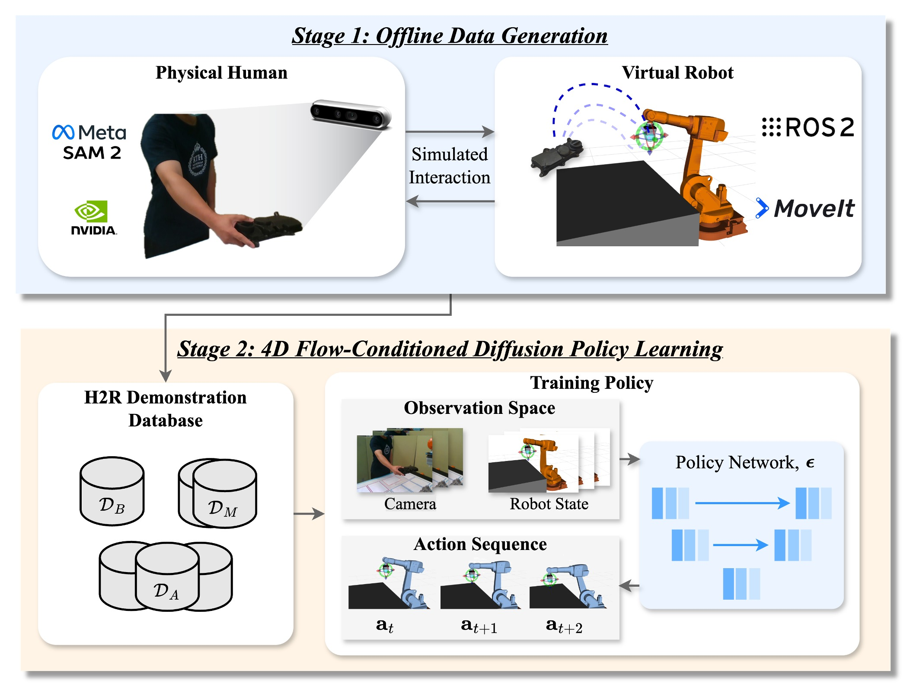
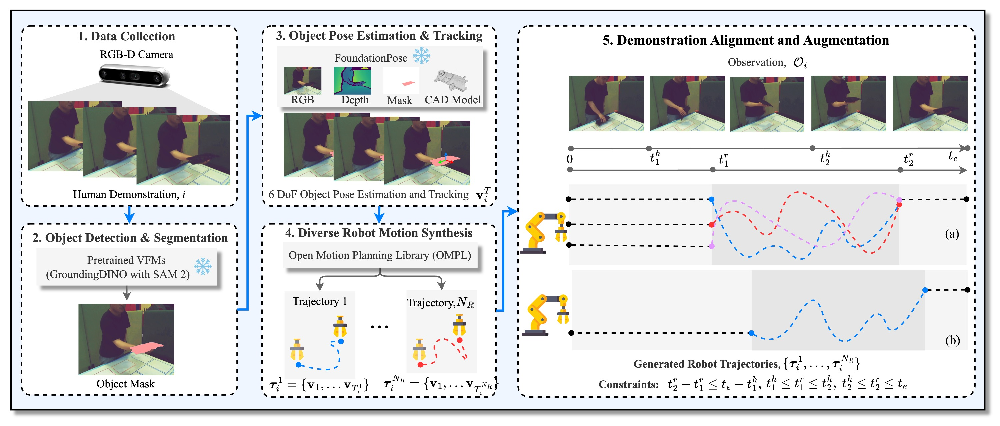
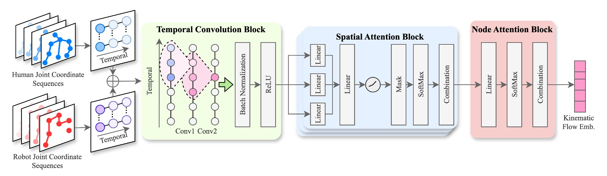
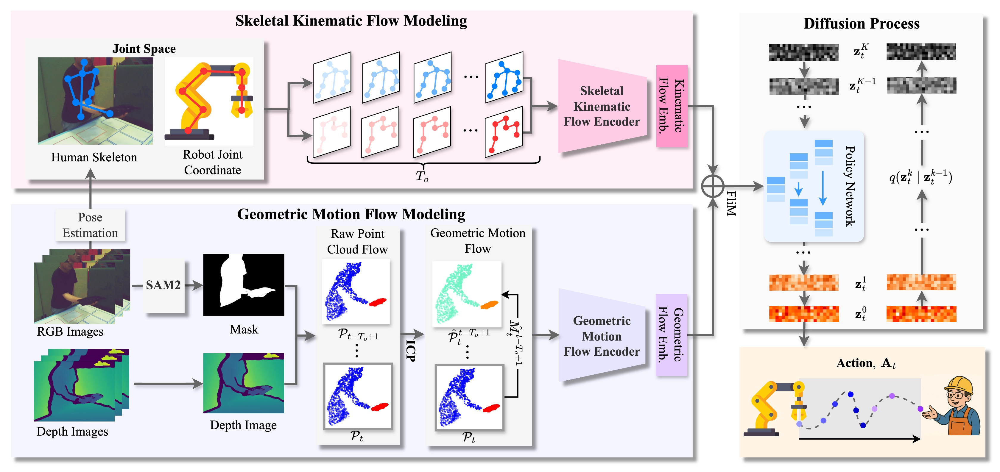
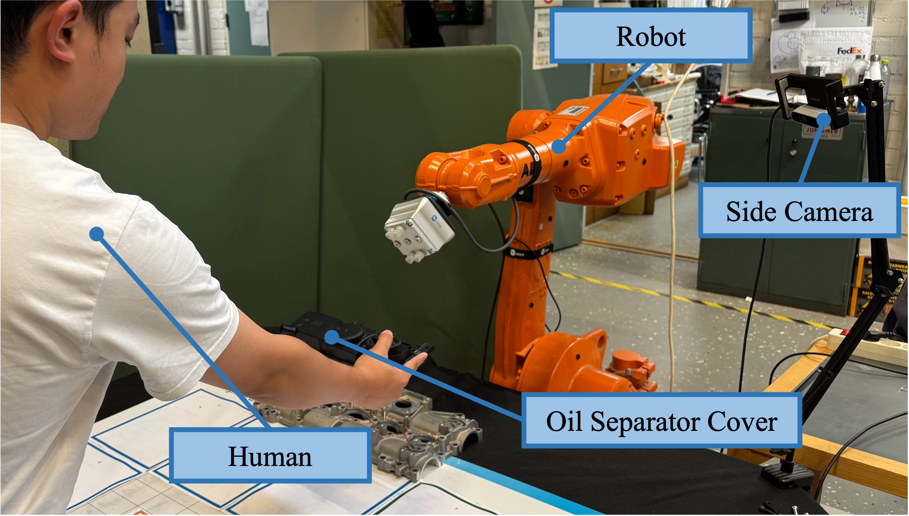
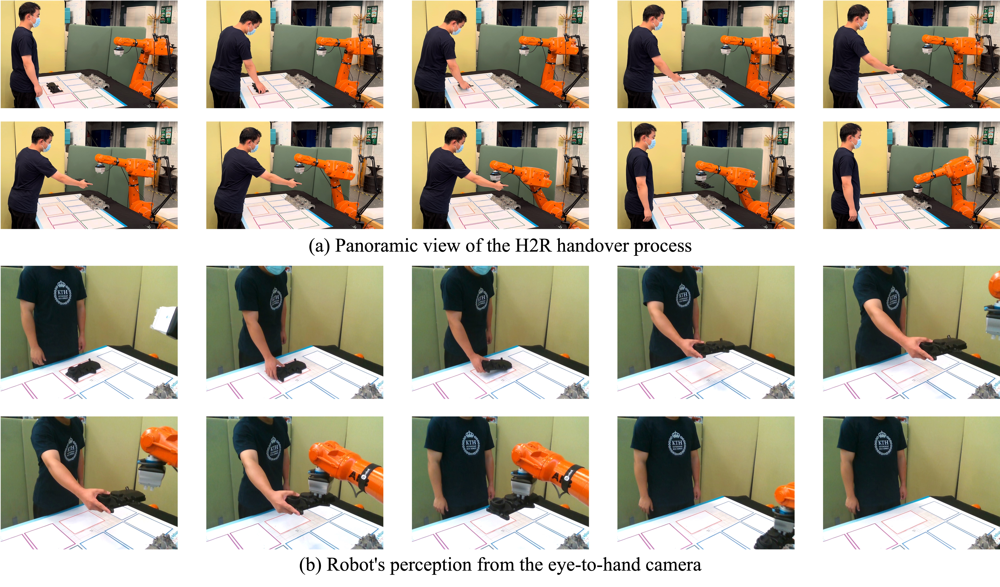

Natural and safe Human-to-Robot (H2R) object handover is a critical capability for effective Human-Robot Collaboration (HRC). However, learning a robust handover policy for this task is often hindered by the prohibitive cost of collecting physical robot demonstrations and the limitations of simplistic state representations that inadequately capture the complex dynamics of the interaction. To address these challenges, a two-stage learning framework is proposed that synthesizes substantially augmented, synthetically diverse handover demonstrations without requiring a physical robot and subsequently learns a handover policy from a rich 4D spatiotemporal flow. First, an offline, physical robot-free data-generation pipeline is introduced that produces augmented and diverse handover demonstrations, thereby eliminating the need for costly physical data collection. Second, a novel 4D spatiotemporal flow is defined as a comprehensive representation consisting of a skeletal kinematic flow that captures high-level motion dynamics and a geometric motion flow that characterizes fine-grained surface interactions. Finally, a diffusion-based policy conditioned on this spatiotemporal representation is developed to generate coherent and anticipatory robot actions. Extensive experiments demonstrate that the proposed method significantly outperforms state-of-the-art baselines in task success, efficiency, and motion quality, thereby paving the way for safer and more intuitive collaborative robots.


Our two-stage framework consists of: (1) an offline data generation pipeline that synthesizes diverse H2R handover demonstrations using Vision Foundation Models without requiring physical robots, and (2) STFlowH2R policy learning that leverages 4D spatiotemporal flow representations for diffusion-based action generation.
We introduce a physical robot-free data generation pipeline that produces augmented and diverse handover demonstrations:

STFlowH2R learns from rich 4D spatiotemporal representations:


We evaluate STFlowH2R in both simulation and real-world environments with diverse objects and handover scenarios.

Extensive experiments demonstrate that STFlowH2R significantly outperforms state-of-the-art baselines across multiple metrics:
@article{zhong2025two,
title={A two-stage framework for learning human-to-robot object handover policy from 4D spatiotemporal flow},
author={Zhong, Ruirui and Hu, Bingtao and Liu, Zhihao and Qin, Qiang and Feng, Yixiong and Wang, Lihui and Tan, Jianrong and Wang, Xi Vincent},
journal={Robotics and Computer-Integrated Manufacturing},
year={2025}
}